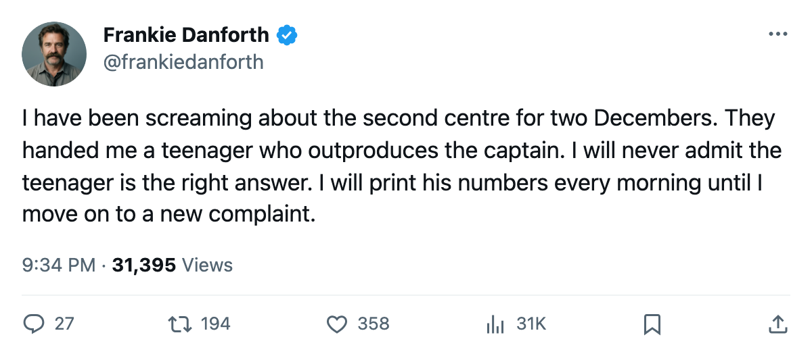
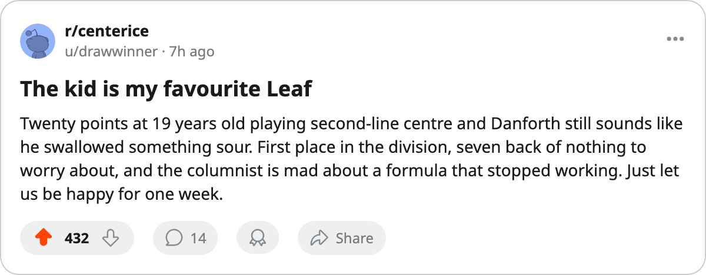

DANFORTH: Code Green, 3 goals won a game I called for 4, and a 19-year-old passed the captain
I printed a number, missed it by a goal, and the team didn't need the four.
 Frankie DanforthColumnist · Queen City Telegram
Frankie DanforthColumnist · Queen City Telegram
Code Green

I printed "4 or more against Pittsburgh on 2005-12-10." The scoreboard read 3. A 3-1 win that keeps  Toronto Maple Leafs in first place and wrecks a pattern I had been selling for a month. I own the miss.
Toronto Maple Leafs in first place and wrecks a pattern I had been selling for a month. I own the miss.
The formula was simple: 4 goals, 4 straight wins. It ran through Philadelphia, Ottawa, Washington, and Philadelphia again. Then  New Jersey Devils held us to 1 in a 1-3 loss and the formula became a ghost. I called it thin on 2005-12-04. It survived one more night at 4-3 against
New Jersey Devils held us to 1 in a 1-3 loss and the formula became a ghost. I called it thin on 2005-12-04. It survived one more night at 4-3 against  Tampa Bay Lightning and died entirely on Saturday. Three goals, win, pattern over.
Tampa Bay Lightning and died entirely on Saturday. Three goals, win, pattern over.
What replaced it is the goals-against column. Toronto has allowed 60 in 28 games.  Rostislav Klesla87 logs 26.1 minutes a night,
Rostislav Klesla87 logs 26.1 minutes a night,  Barret Jackman86 25.7, and
Barret Jackman86 25.7, and  Tomas Kaberle85 has played 9 games back in the top pair after missing the bulk of the schedule. The back end is not the problem. It has not been the problem.
Tomas Kaberle85 has played 9 games back in the top pair after missing the bulk of the schedule. The back end is not the problem. It has not been the problem.
Mikael Tellqvist73 is the one I'll watch. The Bureau's Development Index has him at -5, the largest fall on the roster. He carries a 6-year deal at $1.20M, a G2 slot, and 0 starts in the last 5 games.
The 19-year-old is my answer
Petr Chlup87 is the second-line centre. Slots read L2C. 20 points in 28 games.  Mats Sundin92, the captain, 4 years older at $8.40M, has 19. Chlup's salary is $2.34M with one year remaining.
Mats Sundin92, the captain, 4 years older at $8.40M, has 19. Chlup's salary is $2.34M with one year remaining.
I have logged the second-centre problem since December 2004. I wanted a man who could win draws and carry a February shift. The roster handed me a teenager whose form makes every other option look expensive by comparison. I am not thrilled. The points are the points.
 Stanislav Chistov87 came back from injury and went straight onto the top wing, form term +8, tied with Klesla for the highest among available Leafs.
Stanislav Chistov87 came back from injury and went straight onto the top wing, form term +8, tied with Klesla for the highest among available Leafs.  Rick Nash85 sits at +7. Four Toronto skaters in the Development Index's top 20.
Rick Nash85 sits at +7. Four Toronto skaters in the Development Index's top 20.  Marian Gaborik99 is at +11, the second-highest riser in the league behind
Marian Gaborik99 is at +11, the second-highest riser in the league behind  Vaclav Nedorost80 of
Vaclav Nedorost80 of  Florida Panthers at +12. Gaborik sits home with a leg and a return date of 2005-12-25.
Florida Panthers at +12. Gaborik sits home with a leg and a return date of 2005-12-25.
What's left to fix
Toronto Maple Leafs has 42 points in 28 games.  Boston Bruins has 35 in 27. Monday: Philadelphia, 10-11-2, missing
Boston Bruins has 35 in 27. Monday: Philadelphia, 10-11-2, missing  Marco Sturm85 to a leg until 2005-12-30. The season series reads 2-0-0 for Toronto, 8 goals to 5. Philadelphia is on a 1-game losing streak and carries 2 injuries. We are 8-1 on the road.
Marco Sturm85 to a leg until 2005-12-30. The season series reads 2-0-0 for Toronto, 8 goals to 5. Philadelphia is on a 1-game losing streak and carries 2 injuries. We are 8-1 on the road.
The 4-goal formula was never the reason we won. It was a symptom of a top 6 clicking and a back end holding its coverage. Chlup has 13 assists in 28 games, which means wingers are finishing his passes. That is what I asked for two Decembers ago, and a teenager delivered it while I was still arguing with my own depth chart.
Code Green. I'll type it once.

